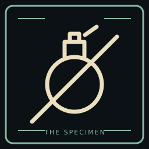
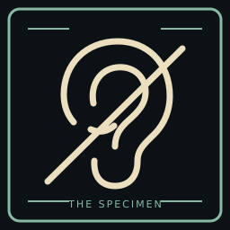
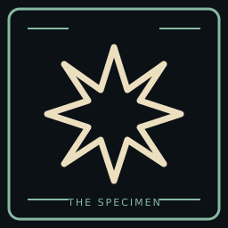
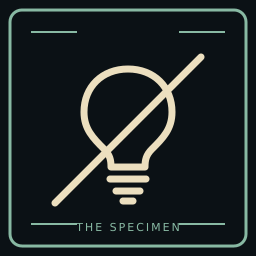
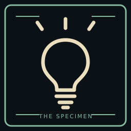
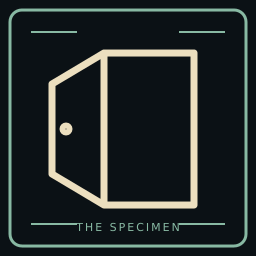
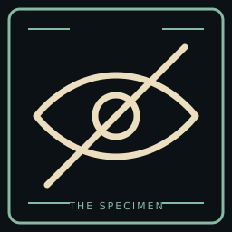

Escape empty-handed
Escape without picking up a flashbang during this run.
ESCAPE_WITHOUT_FLASHBANGSeven achievement concepts for a facility escape. The icons and tiles below are art drafts for review, not live Steam achievements. The game tracks and saves these achievements locally. Steam sync is an optional build feature; no Steam app or published achievements exist yet. See docs/achievements.md.

Escape without picking up a flashbang during this run.
ESCAPE_WITHOUT_FLASHBANG
Escape without picking up the detector during this run.
ESCAPE_WITHOUT_DETECTOR
Land a flashbang burst on the monster. Throwing one without a confirmed hit does not count.
FLASHBANG_HIT_MONSTER
Escape without restoring the boiler during this run.
ESCAPE_WITHOUT_BOILER
Restore power at the boiler. Unlock when repair finishes, not when interaction starts.
RESTORE_BOILER
Open the unlocked exit door, then get caught before leaving the facility.
CAUGHT_AFTER_EXIT_OPEN
Escape without the monster ever detecting you during this run.
ESCAPE_UNDETECTEDIcon sources and exports: achievements/render.py. Each concept has a 256 x 256 unlocked PNG and a dim locked PNG. The matching SVG files are editable masters.